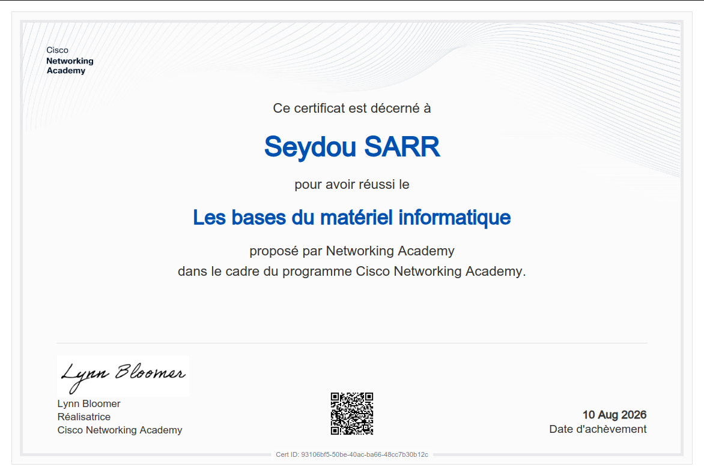
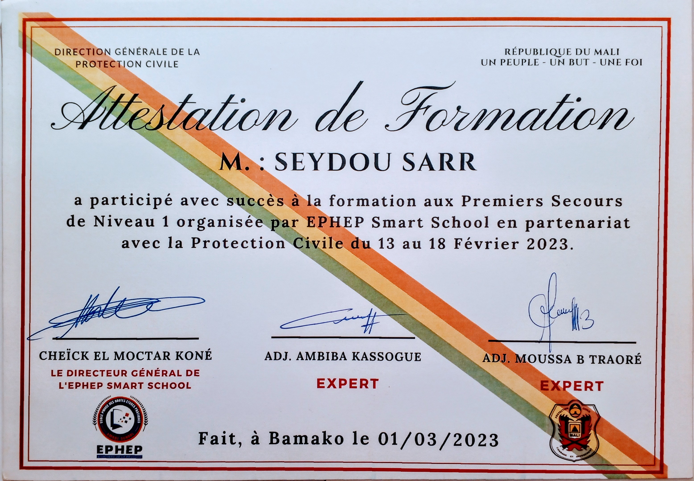
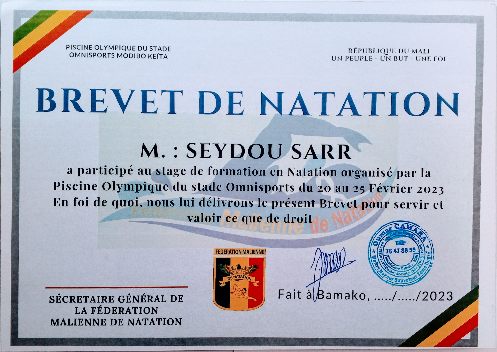

Badges de Pratique
Challenges & Rooms complétés sur la plateforme TryHackMe — apprentissage actif par la pratique.


Introduction to Cybersecurity
Principes de base de la sécurité informatique, confidentialité, protection des données et menaces courantes.
Vérifier Credly →Ethical Hacker
Techniques d'audit de vulnérabilité, mécanismes d'attaque, cryptographie et analyse défensive.
Vérifier Credly →Support et sécurité des réseaux
Sécurisation des architectures réseaux, protocoles sécurisés, pare-feu et dépannage de sécurité.
Vérifier Credly →Networking Basics
Fondamentaux du modèle OSI/TCP-IP, adressage IP, sous-réseaux et protocoles de communication.
Vérifier Credly →Networking Devices & Initial Configurations
Paramétrage initial des équipements Cisco, routage de base, sécurisation de l'accès console et distant.
Vérifier Credly →Adressage réseau & dépannage de base
Méthodologie de dépannage de couches basses, vérification des tables d'adresses et diagnostic IP.
Vérifier Credly →
Cisco NetAcadComputer Hardware Basics
Architecture matérielle des ordinateurs, diagnostic des pannes physiques, périphériques et BIOS/UEFI.
Vérifier Credly → Sécurité Système
Sécurité Système
EndPoint Security
Protection des postes clients, pare-feu système local et surveillance de la conformité des hôtes.
Vérifier NetAcad → Pratique Autonome
Pratique Autonome
Élévation de Privilèges Linux
Audits de droits sur hôtes Linux : détournement de fichiers SUID, configurations sudoers abusives.
Voir Dépôt Lab → Veille & Outillage
Veille & Outillage
Analyse & Cryptographie
Veille active sur les algorithmes de hachage obsolètes et robustes, chiffrement symétrique/asymétrique.
Voir Dépôt Lab → Événement National
Événement National
Journées Nationales Cybersécurité
Attestation de participation aux conférences, ateliers pratiques et tables rondes de cybersécurité régionales.
Attestation PhysiqueJeunesse & Leadership
Engagement citoyen et formations sur la gestion de projet et la prise de parole au sein de la JCI.
Attestation JCI
Sécurité & InterventionPremiers Secours
Attestation de formation aux gestes de premiers secours d'urgence, assistance aux victimes.
Attestation Officielle
Capacité PhysiqueBrevet de Natation
Certification officielle attestant de l'aptitude physique et de l'endurance en natation sportive.
Brevet Validé